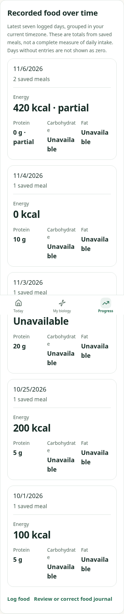
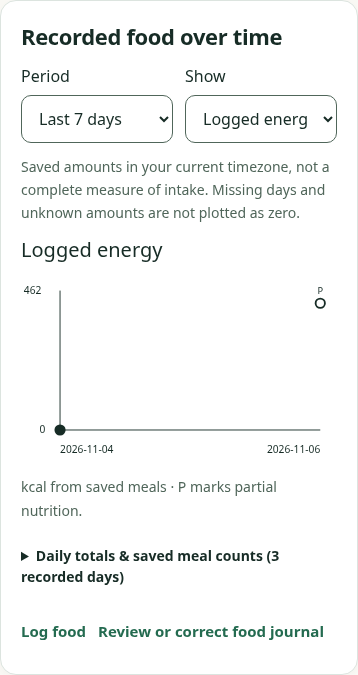

Matched synthetic saved records, UTC viewer,390px light. Before:4d3e149. Before showed the latest seven logged dates; the new explicit default is the last seven calendar days. Older original records remain available through All recorded dates. No source values were changed.


123Recorded amounts are not complete intake, a target, or proof of a dietary effect. Keyboard, empty/all, failed-read retry, exact kJ conversion and account isolation are automated checks; independent Design and physical VoiceOver remain pending.